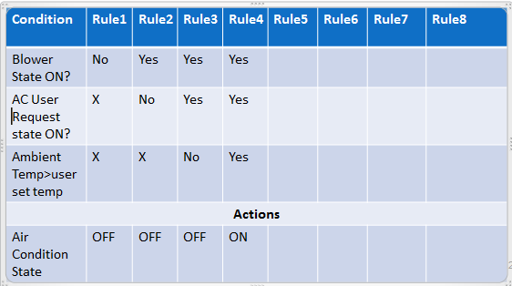

What is product testing?
Product testing is simply put just making sure that the product works. Each aspect will be tested to make sure it works before it is sold to a customer, this stops the customer from recieving a product that is faulty or is incomplete.
When testing a product its best to make a test table to keep track of all the tests done and what the results are from doing the tests. The table should include what your doing for the test, what happend when it was tested e.g. error message, what should happen when tested and any evidence of the test. The evidence could be a screenshot, photo or video.

(https://sqa.stackexchange.com/questions/13943/testing-for-invalid-conditions-using-decision-table-technique)
It is quite common for a product to be tested by the public (especially in the gaming industry), an early beta version of the item is produced and released for the public to use and they test the product. Doing this is free for the company producing the product as it gets others to test the product and give feedback without having to pay them and it is fun for the client who may of paid for the beta version or they may of had a free copy.
when testing its likely you will come accross some errors which is to be expected. these errors should be recorded on the testing table and as you correct these errors the results should be added to the table when re-tested. when the the testing is done and its all working the results should be discused. the discusion might talk about the succsees of the product, how well it did, and how you succedded on meeting the client requirements. areas of weakness should be identified along with improvements that could be made. this includes any enhancements meaning anything that wasnt in the diesign brief but would be benificial to add. both the improvements and enhancements should be justified meaning they eould show the benifits of adding these things.
unit testing
Although testing the product as a whole is important testing the parts within the product can be done too. By testing different units within the product it shows wether it it fit to use. for example, when making a website you would test certain sections of the code before testing the whole thing.